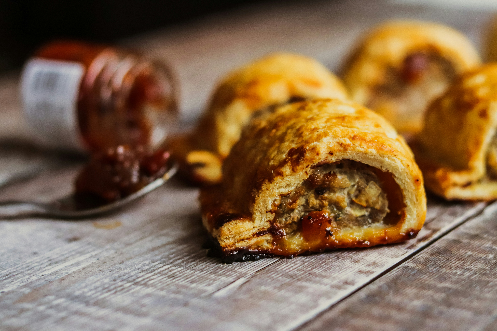

Sausageroll
Home

Description
A flaky puff pastry wrapped around seasoned sausage meat, baked to perfection. Crisp outside, juicy inside and a classic bakery favorite.
ingredients
- Puff pastry sheets
- 250g sausage meat
- 1 small onion
- 1 tbsp breadcrumbs
- 1/2 tsp black pepper
- 1/2 tsp paprika or nutmeg
- 1 egg beaten
Steps
- Mix sausage meat wit onion, breadcrumbs and spices.
- Roll out puff pastry, cut into rectangles.
- Place sausages filling in center, fold pastry over, seal edges.
- Brush with beaten egg
- Bake a 400 degrees fahrenheit for 20-25 minutes until golden and crisp.